South America · Colombia · Tayrona
Tayrona National Park, November 25 and 26, 2017
From Taganga I walked through Tayrona National Park with an Australian I had met, slept one night in a tent, and walked out early the next morning.
My conclusion up front: Tayrona is worth the effort, and it is a place to treat as wild. On the morning of the 26th I filmed what I took to be a very large crocodile in the sea and a very large snake in a tree, and both were close to where people walk. I do not have a ticket, a receipt or a bus photo, so I do not remember what I paid, and I did not write down the route. The photos show a lot, but not everything.
The times are my phone's clock, and Google Photos stores them in Colombian time (GMT-5). The boxes hold research I did in November 2026, each with a source and a date, so you can tell it apart from what I remember. The videos on this page have no sound.
- Park fee in 2026: 81,000 pesos in low season and 96,500 in high season for a foreign visitor, and 43,500 for the Bahía Concha sector. I did not find the price of a tent pitch or a hammock.
- Closures in 2026: February 1 to 15, June 1 to 15, and October 19 to November 2. I did not find whether these repeat in other years.
- Caimans: one was reported on a beach in September 2026. The park's head advised moving away and not swimming at beaches closed to visitors.
- The park's own site would not open for me, so check it before you plan.
The sources and the details are in the boxes below the story. These things change, so check before you go.
Into Tayrona
On Saturday, November 25, I went into Tayrona National Park. I took a bus and paid the entrance fee, and I do not remember the price or where the bus left from. Google Photos has no photo of a ticket or of the bus. I walked in with an Australian traveller I had met. We went on foot along the coast, from one beach to the next, between about 12:08 and 13:32, which is when my photos from that day were taken.
Google Photos pins the first photos at the park, and the beach ones next to Playa Arrecifes and La Piscina. The viewpoints with the headland are on the map close to Playa Cañaveral. I do not know where we entered, and I did not record the path, so I do not describe it step by step.
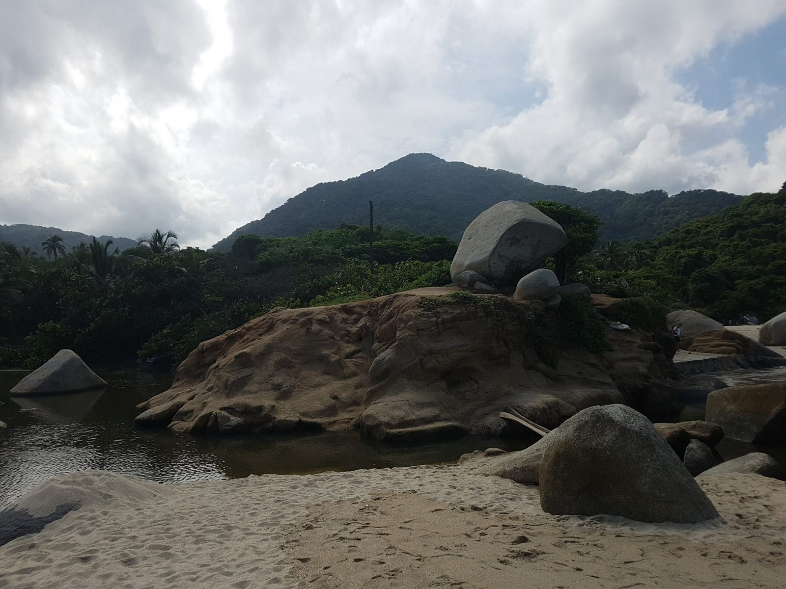
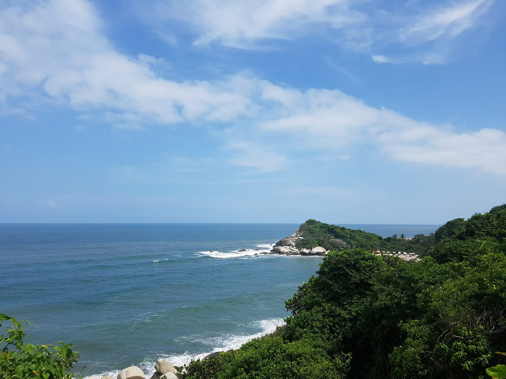
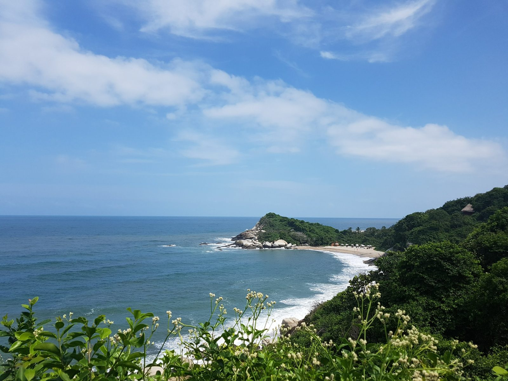
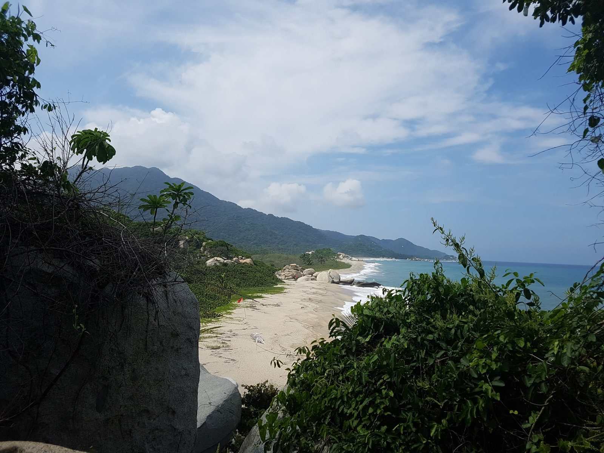

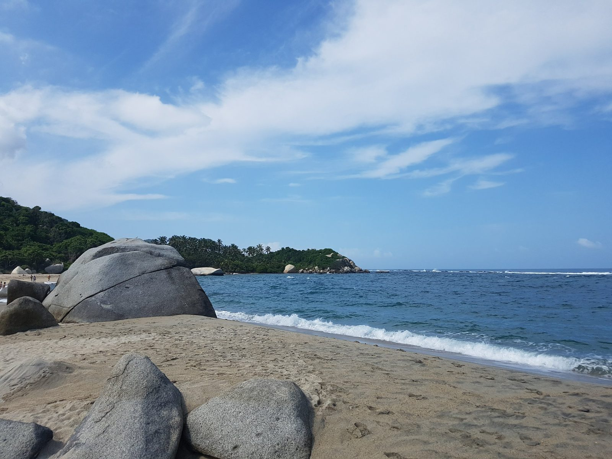
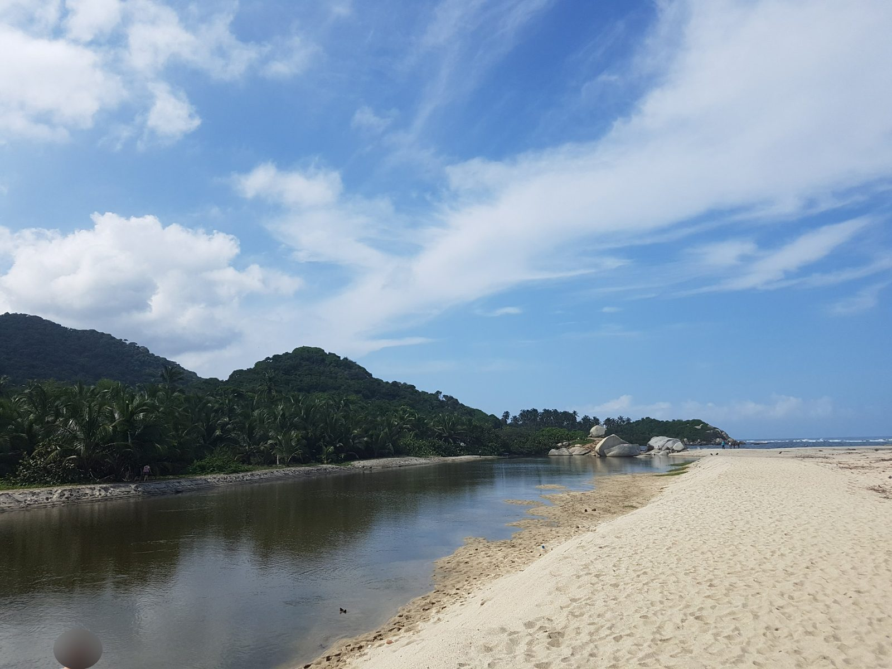
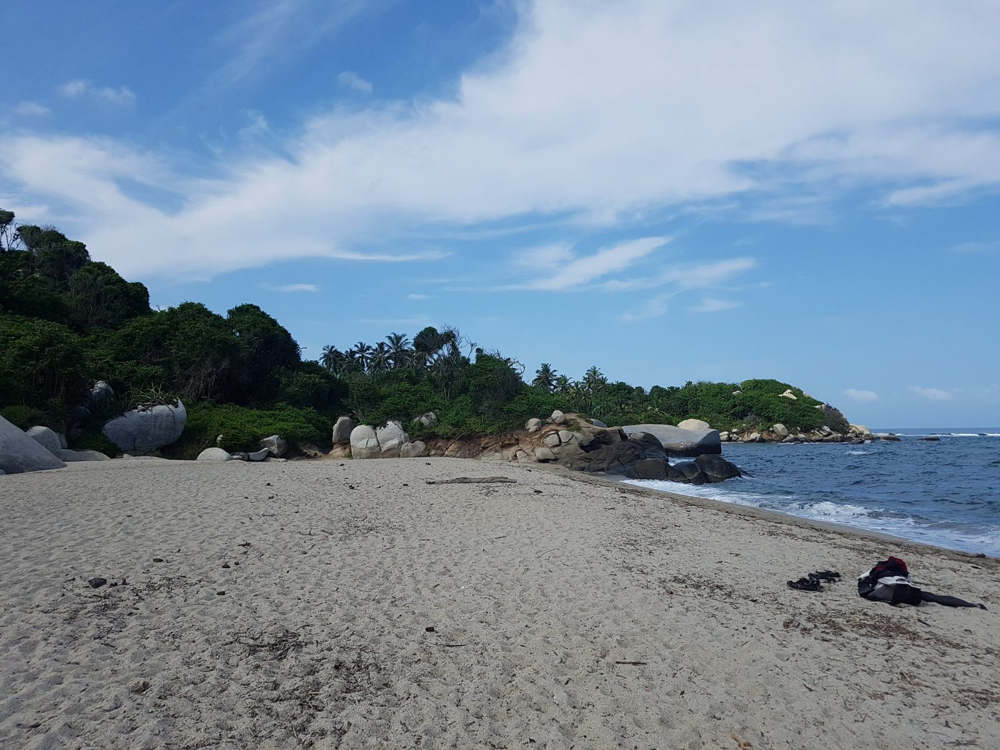
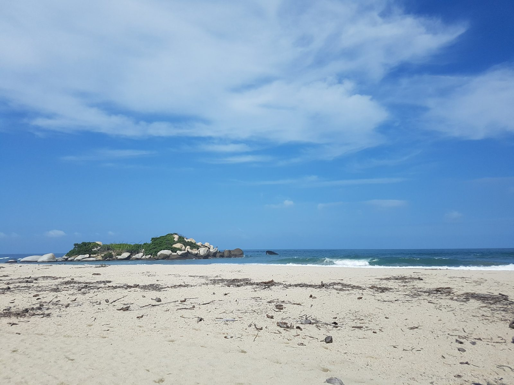
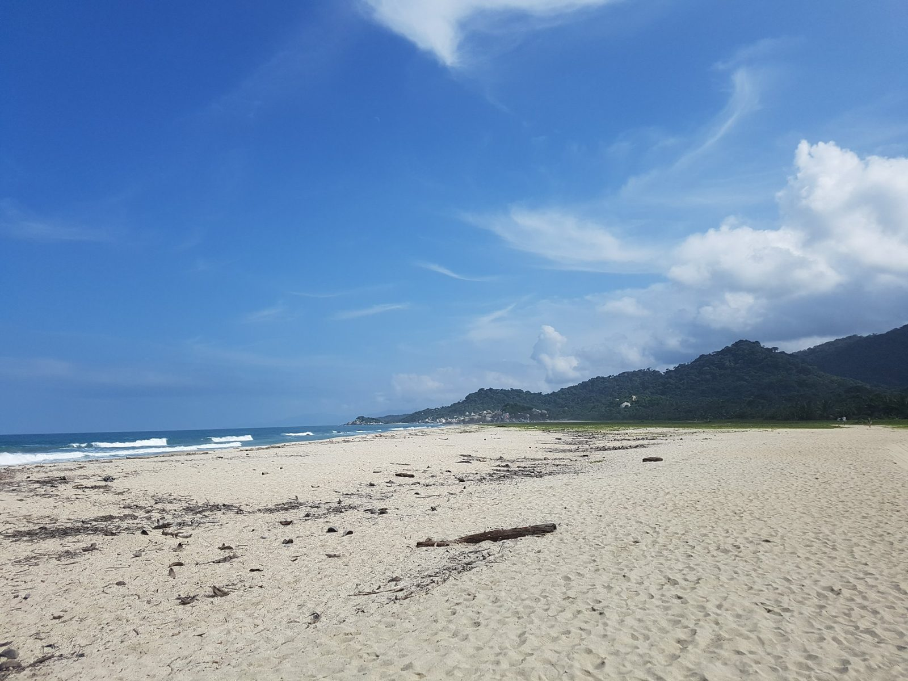
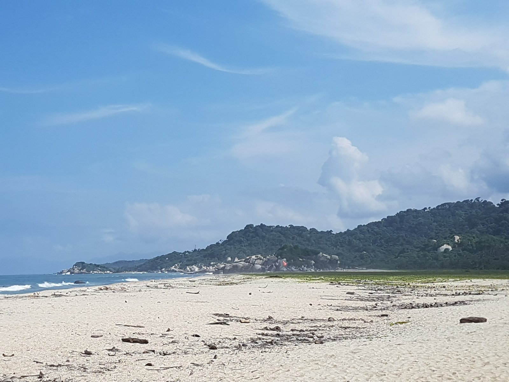
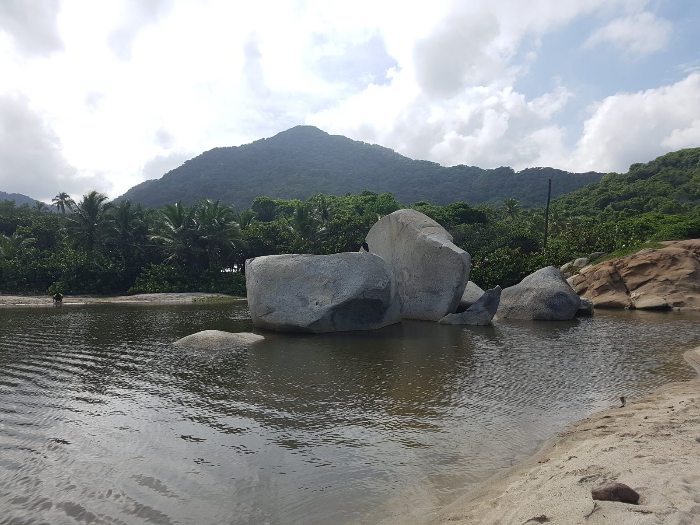
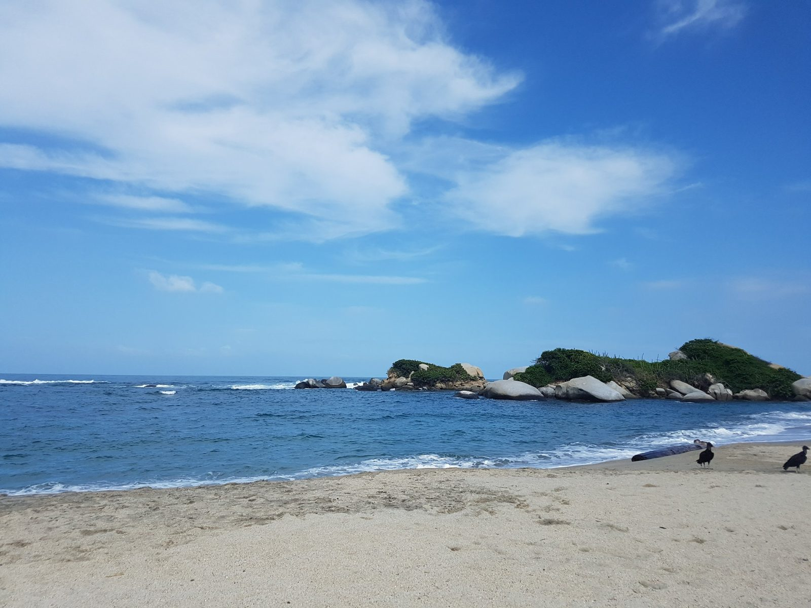
What I found: for 2026, a foreign visitor who is not a resident of Colombia or a member of the Andean Community pays 81,000 pesos in the low season and 96,500 pesos in the high season, and 43,500 pesos for the Bahía Concha sector. The rates took effect on January 1, 2026, under Resolution 551 of December 19, 2025 (Infobae, January 6, 2026).
The same article lists three closures for 2026: February 1 to 15, June 1 to 15, and October 19 to November 2. Another outlet confirms the February one and says it is a planned pause for the land to rest and for traditional practices of the Indigenous communities (RCN, January 31, 2026).
What I did not find: what I paid in 2017, the price of a tent pitch or a hammock, opening hours, and whether the closure dates repeat in other years. The park's own site would not open for me, so check it before you plan.
The night in a tent
We slept in a tent at the camping area. My videos from the next morning are tagged Cabo San Juan del Guía, so I take that to be where it was, but I did not note the name of the site at the time. I do not remember what we ate or what the night was like.
The morning of November 26
We left early, and I filmed three short clips that morning. At 07:16 I filmed the sea, where two dark shapes lay on the water. To my eye they were a very large crocodile. In the clip they are small and a long way from the shore, and I cannot tell the species from the video. At 08:20 I filmed a tree with an old lamp fixed to its trunk, and low on it, in a hollow, a pattern that I took to be a very large snake, coiled. Again I cannot give the species. At 11:09 I filmed the way out along a wooden boardwalk, through thick bushes.
What I found: on September 20, 2026, a large caiman walked across a beach in the park while people were sunbathing, and the visitors stepped back and let it pass. The report does not name the beach, though one photo caption shows Cabo San Juan del Guía (Vanguardia, September 21, 2026). In 2016 the park's head said that the thing to do on seeing a caiman is to move away and keep your distance, and that you should not swim at beaches that are closed to visitors, since many have caimans. That article names two common kinds in the park (El Heraldo, November 4, 2016).
What I did not check: what the animals in my videos were. I did not find a source on snakes at the campsite, and I do not claim to know the species.
Leaving for Minca
I do not know how we left the park, and Google Photos holds nothing from the way out beyond that boardwalk clip. At 16:53 I took a photo from a hillside, looking at forested hills with a pale sky behind. Google Photos tags it Minca, a village in the hills above Santa Marta. So the walk out and the trip up to Minca happened on the same day, the 26th.
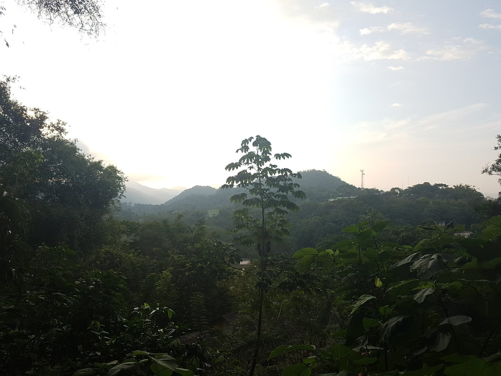
In Minca we split up. The next chapter starts there.
What I do not remember
I do not remember what the park cost, where the bus left from, which path we took in and out, what we ate, or how I got from the park to Minca. I would rather leave these empty than make them up.